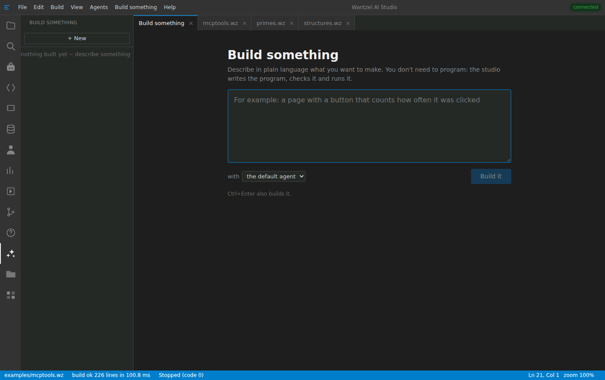
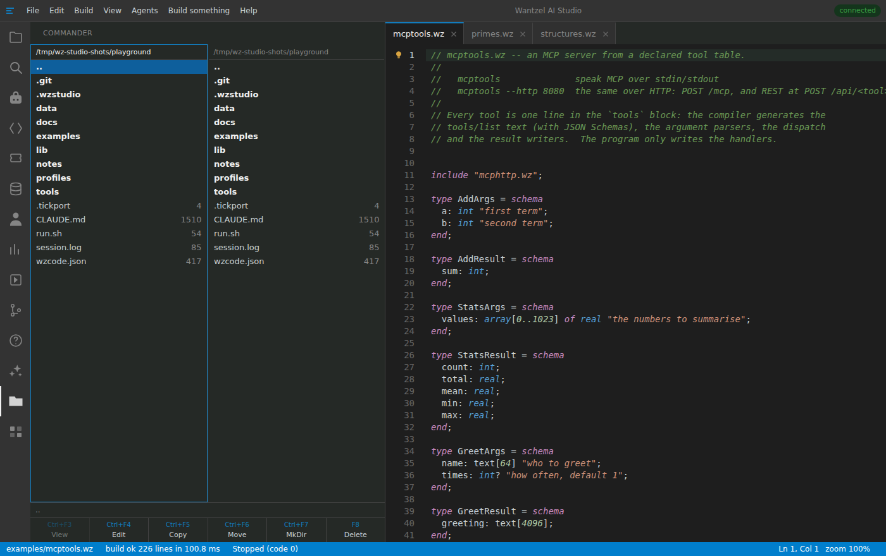
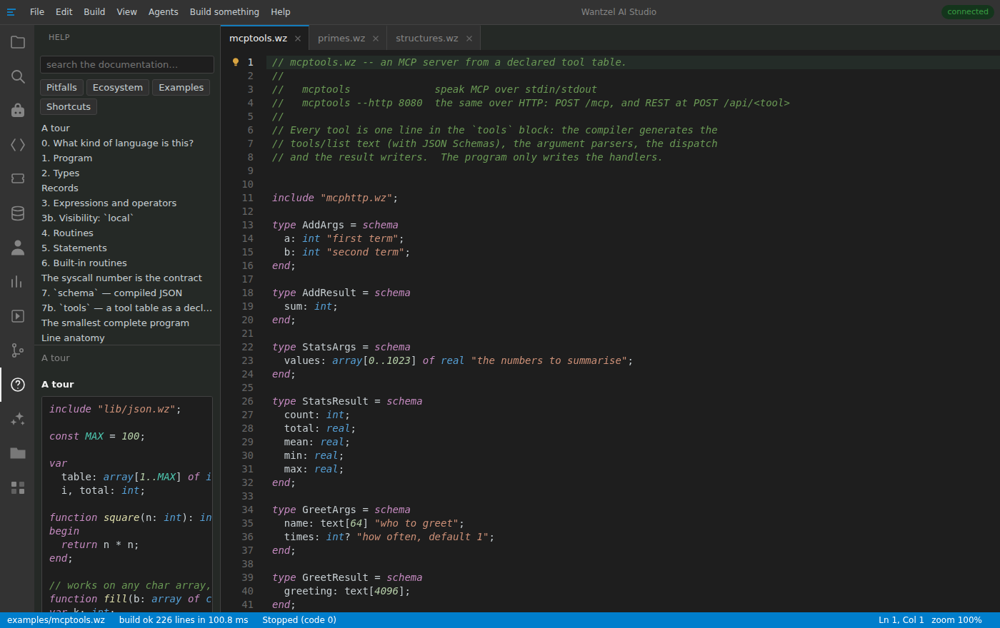

Features
- Integrated MCP server — every manual action is a tool an agent can call. Read, write, browse, compile, run. No plugin, no bridge, no configuration.
- Agents that fix their own mistakes —
buildandrunare tools, so the agent gets the compiler's exact message and corrects itself. You ask for a working program, not a draft. - An extremely short write-compile-feedback cycle — 2 ms per compile, so being wrong fifty times costs a tenth of a second. Sixteen-way parallel it is 400 full compiles in 0.15 s — the toolchain is never the thing you wait for.
- Language helpers that cut the iterations — the agent looks up a topic, searches for the one line that matters, or pulls a proven example instead of guessing. Measured over ten tasks: a median of 5 compile attempts against 12 without, 5 against 57 at worst, and about half the wall-clock time.
- Integrated ticket system — your tickets are a panel. Hand one to an agent and it reads the ticket, writes the code, compiles it, and writes back into the work log.
- Work you can watch and take over — a tool writes a file and the window updates. No diff at the end, no sandbox you cannot see into.
- Your login, your machine — the studio starts the agent you already have. No API key, no per-token bill, no code sent to a service you did not pick.
- No lock-in to one AI vendor — more than one coding model from the start, so a service going away overnight does not stop your work.
- One server, any browser — a single Linux binary; on your own machine (on Windows, under WSL2), or on a shared server. Open the URL and work.
- A fleet view for many agents — how many run, what each is doing, and a launch button per profile, in one panel.
- Fleets of agents in parallel — on ordinary hardware instead of a VPS per handful.
- Automatic failover between coding models — when one is rate-limited or down, the work moves to the next.
- Documentation that learns — every session feeds the language documentation the next one reads, so the same mistake is made once.
Working together
You set a breakpoint; the program stops where you said
Click a line to set a breakpoint, start debugging, step over, into and out. The variables are the program's real memory: globals, arrays, records, unfolded on demand.

A mistake is explained where you made it
Errors appear while you type, before any build. The explanation comes from the same language help an agent reads, with a fix that compiles -- apply it yourself, or hand the error, its context and that help to an agent.

An agent works in the same files you do
Pick the engine, ask in plain words, and watch the agent build, run and correct itself with the same tools you use by hand. Nothing happens in a window you cannot see.

Or just describe what you want
For people who do not program: describe the program in plain language. The studio has an agent write it, compiles it, lets the agent repair what does not compile, and runs it -- and you steer in plain language too.
{kind=link}

Profiles give every agent a clear job
A profile is a role in one sentence plus the instructions an agent starts with: builder, tester, reviewer, and two dozen more. Switch them on, edit them, or write your own.

Browse and edit the tables of your own app
Point the table browser at any app that offers its tables over MCP. Filter, page through the rows, and edit a field where the app allows it -- through the app's own tools, so its validation still applies.

Tickets are a panel, and an agent can take one
Search, read and change the status of your tickets beside the code. Give one to an agent: it reads the ticket, writes the code, compiles it and logs what it did.

History, one line per change
The project's commits as a graph: message, hash, author and time, newest on top.

Two panes for files, keyboard first
A commander in the sidebar: two folders side by side, and view, edit, copy, move, make a folder and delete on the function keys.
{kind=link}

The language help is built in
The same documentation the agents read, in a panel: topics, pitfalls, examples and shortcuts, searchable, with code you can copy.
{kind=link}
